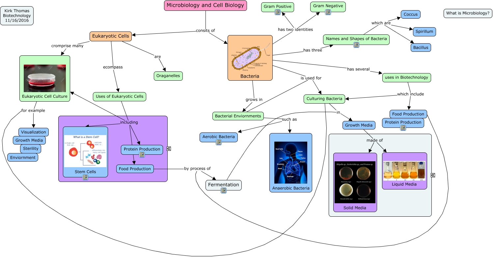

WARNING:
JavaScript is turned OFF. None of the links on this concept map will
work until it is reactivated.
If you need help turning JavaScript On, click here.
This Concept Map, created with IHMC CmapTools, has information related to: Microbiology, Names and Shapes of Bacteria which are Spirillum, Food Production by process of Fermentation, Microbiology and Cell Biology consits of Eukaryotic Cells, Bacterial Enviornments such as Aerobic Bacteria, Uses of Eukaryotic Cells including Protein Production, Bacteria grows in Bacterial Enviornments, Eukaryotic Cells cromprise many Eukaryotic Cell Culture, Growth Media made of Solid Media, Eukaryotic Cell Culture for example Visualization, Bacteria has two identities Gram Negative, Bacteria has two identities Gram Positive, Culturing Bacteria for example Visualization, Bacterial Enviornments is used for Culturing Bacteria, Bacteria has three Names and Shapes of Bacteria, uses in Biotechnology which include Culturing Bacteria, Bacteria is used for Culturing Bacteria, Fermentation in Growth Media, Growth Media made of Liquid Media, Uses of Eukaryotic Cells including Eukaryotic Cell Culture, Microbiology and Cell Biology consits of Bacteria
